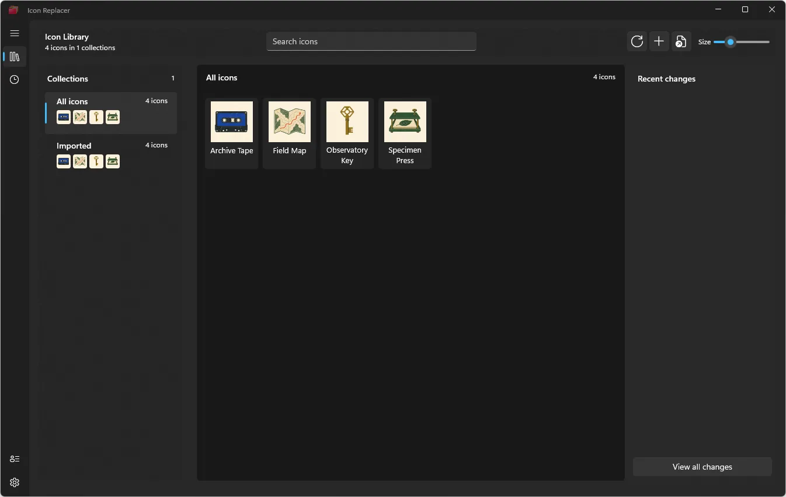
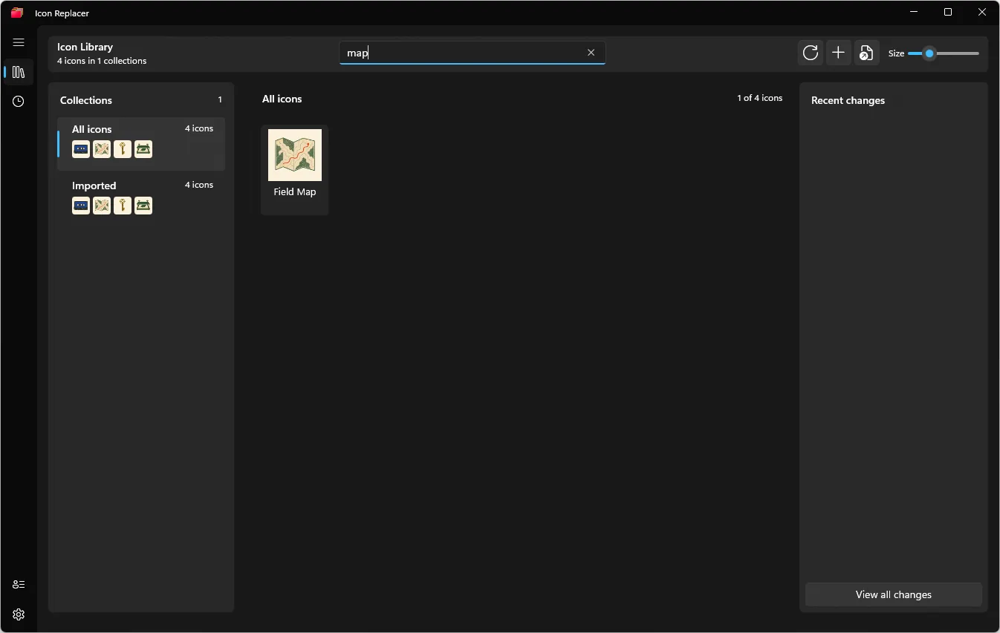
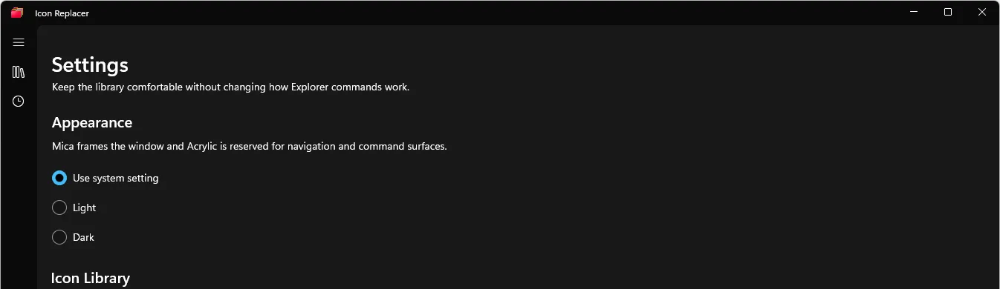
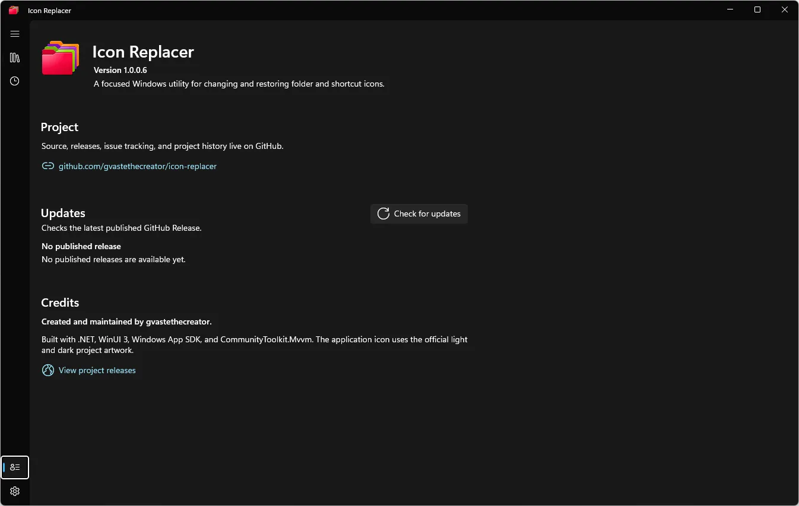

Local first
Your icons, history, and library stay on your Windows account.
WINDOWS UTILITYRC / 01
Change folder and shortcut icons from File Explorer. Keep a local library. Undo the decision later.
Windows 10/11 · x64 · local `.ico` files · no account
FIELD NOTE / 001
ONE RIGHT-CLICK. ZERO REGISTRY DETOURS.
Icons are not decoration.
They are wayfinding for the file system.
PRODUCT TOUR / REAL BUILD




Screenshots were captured from the current WinUI Release build. The four sample icons are documentation fixtures, not bundled assets.
THE SHORT PATH
Right-click a local folder or `.lnk` shortcut in File Explorer.
Use a collection or import a local `.ico` file into `%USERPROFILE%\.icons`.
Icon Replacer records the previous state so Recent can put it back.
Your icons, history, and library stay on your Windows account.
Modern and classic menu paths meet users where the folder already lives.
Every mutation is designed around a Restore Record, not a leap of faith.
CURRENT RELEASE
The core workflow is working. Stable status remains gated by uninstall, accessibility, and remaining Explorer evidence.